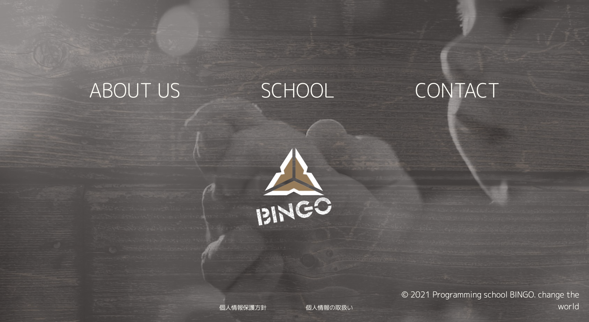
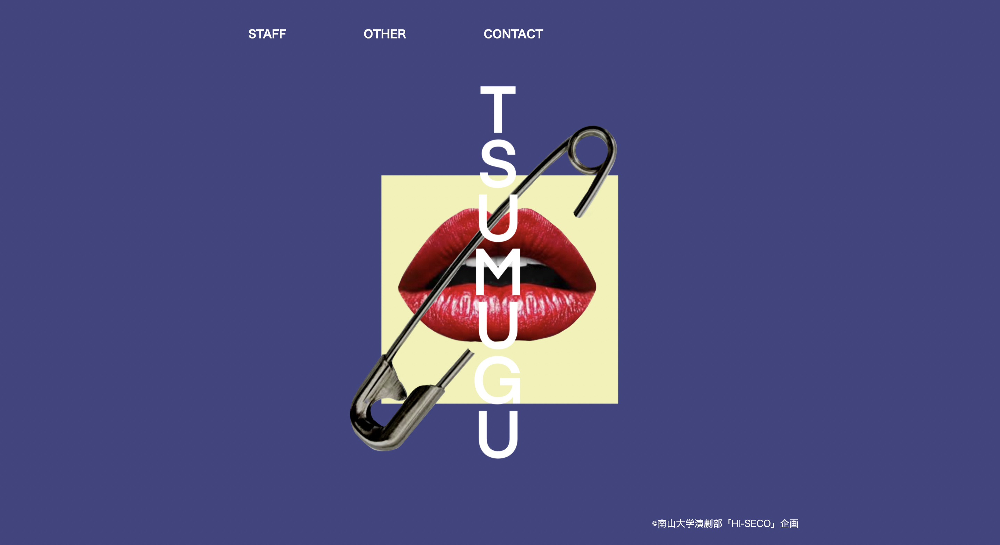
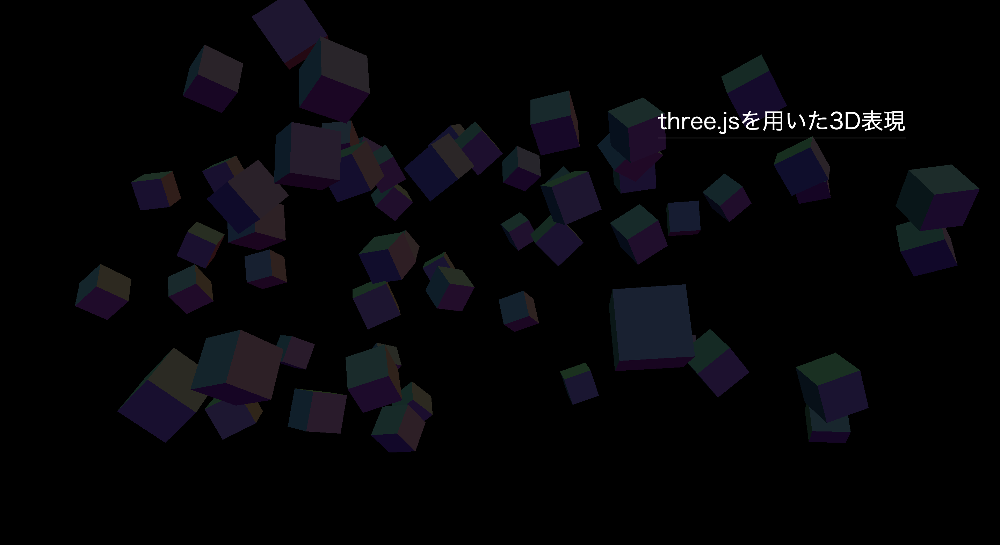

プログラミング教室BINGO
大学一年生から現在までバイトをしているプログラミング教室BINGOから依頼され制作。
依頼主にサイトのイメージや要望を聞きながら進めた。
デザインからAWSを使用したサーバへのアップロードまで行った。
今後はPHP、もしくはPythonを使用し、生徒の作品をアップロードできるサービスの追加を検討中。
[使用技術 : HTML, CSS, JavaScript, AWS]

南山大学「HI-SECO」企画 卒業公演TSUMUGU Webパンフレット
大学2年生の頃から所属している演劇部。2022年卒業公演時に宣伝美術として携わり制作した。
演出と話し合いながら、webパンフレットの提案、デザイン、コーディングをおこなった。
公開はGitHubリポジトリを使用した。
[使用技術 : HTML, CSS, JavaScript]

three.jsを用いた3D表現
XRに興味を持ち、Webページと組み合わせることが可能と知り勉強を始めた。まだまだ始めたばかりだが、今後もっと勉強し、アップデートしていきたい。 [使用技術 : HTML, CSS, JavaScript(three.js)]